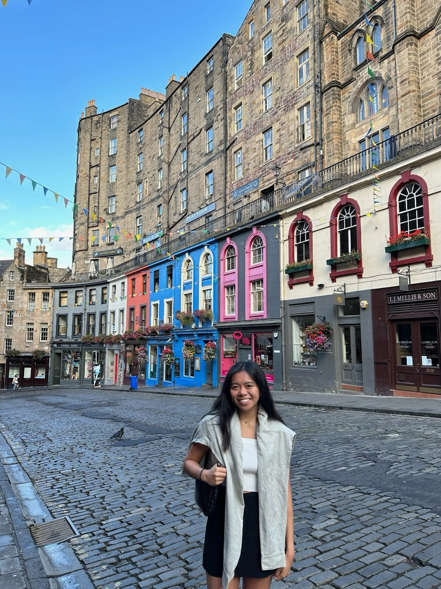
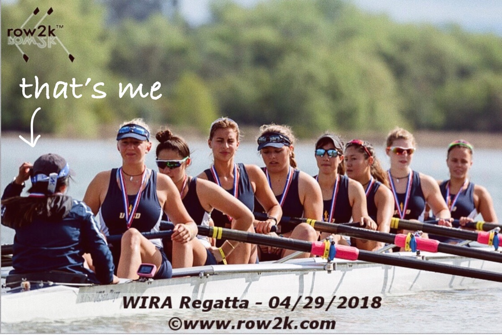
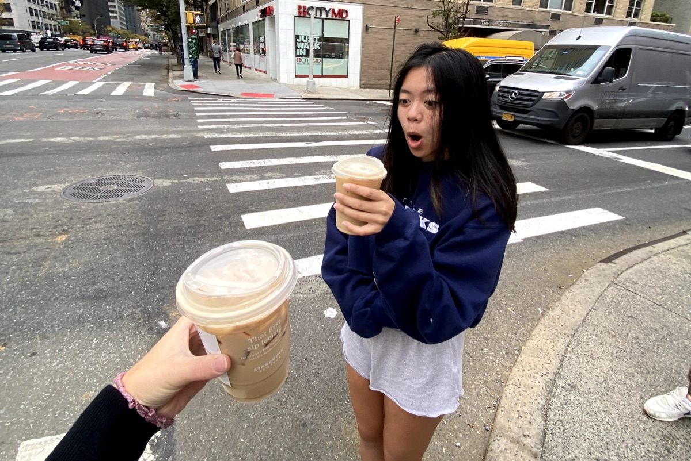
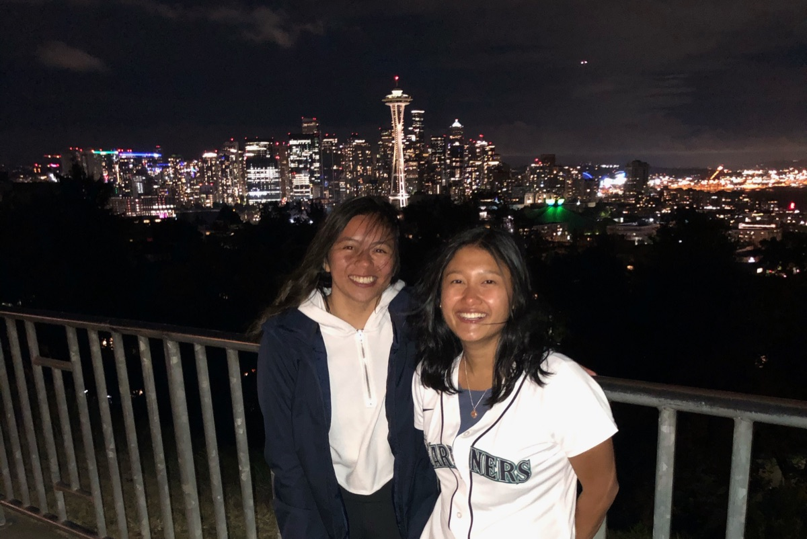
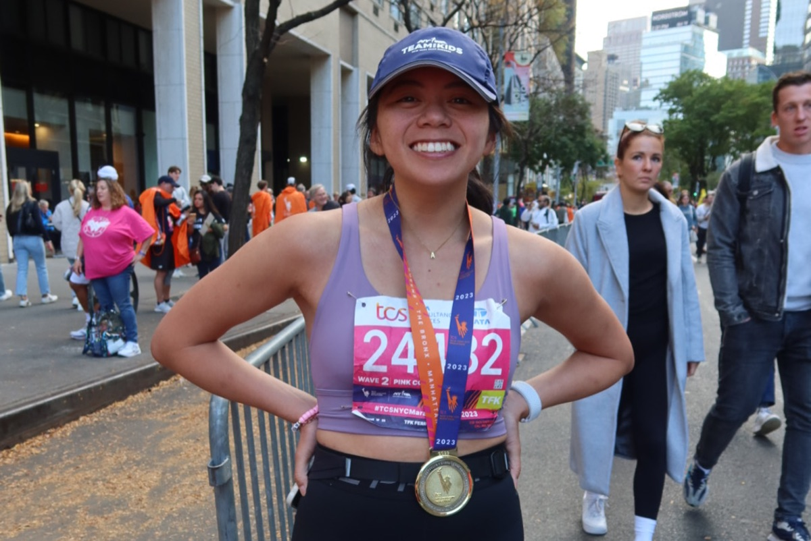

About me
Senior product designer · Iced latte enthusiast · NYC
I'm a senior product designer & iced latte lover based in NYC! Currently, I'm designing at Betterment, helping people grow their money by making saving and investing easy.
I'm naturally curious, so I'm always ready to explore and learn new things! I'm drawn to projects that allow me to use my creativity and innovation to solve logical problems. I truly love design because I get to integrate information, empathy and creativity to build meaningful experiences for people.

Experience
- Start
-
Mile 1
Design Lab x DexcomCreated tools to help people manage their diabetes.
- Cheer station (see key)
-
Mile 2
Five to NineImproved how organizers create, manage, and share events.
-
Mile 3
99 DriveImproved the used car buying and selling experience.
-
Mile 4
AboundHelped indie brands & retailers grow their business.
- Aid station (see key)
-
Mile 5
CredibleHelped people improve their financial health.
-
Mile 6 · Current
BettermentHelping people grow their money by making saving and investing easy.
-
Finish
lol, retire?And travel 🙂
Key
- Start
- Mile marker
- Girls Who Code cheer stationTaught high school girls computer science
- Aid stationIced latte refuel
- Finish
Fun facts
-

I rowed and coxed for UCSD's women's rowing team. -

Firm believer in ordering an iced latte year round. -

Still waiting for the Mariners to win the World Series. -

Ran the 2023 NYC Marathon with Team for Kids!